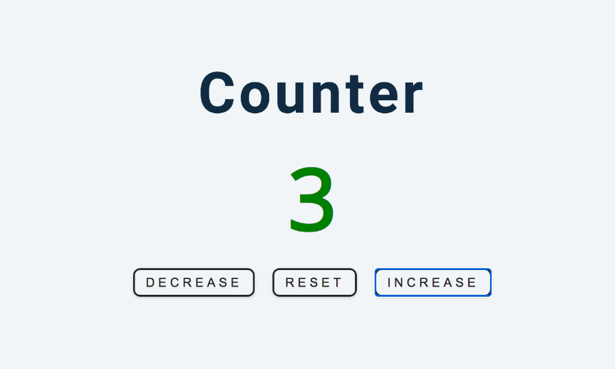

Noel Odero
Web Developer | Tech Enthusiast | Political Justice Advocate
About me
I am a dynamic problem-solver with a unique blend of expertise in technology, governance, and public speaking. My passion lies in leveraging digital innovation to drive meaningful social change. I am also a passionate web developer; I love bulding responsive and interactive web applications.
HTML5
CSS3
JavaScript
Git & GitHub
Responsive Design
Python
Bash scripting
Projects Showcase

Counter
This is a simple counter web application that allows users to increase, decrease, or reset a displayed value.
Let's Work Together
Feel free to reach out via email or connect with me on my social media platforms: